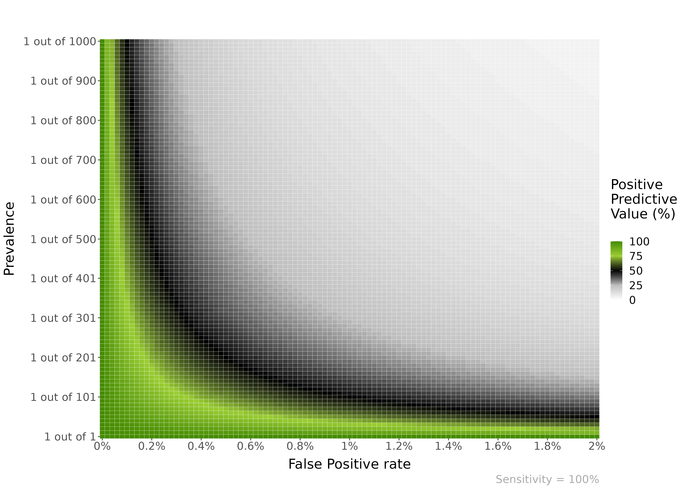
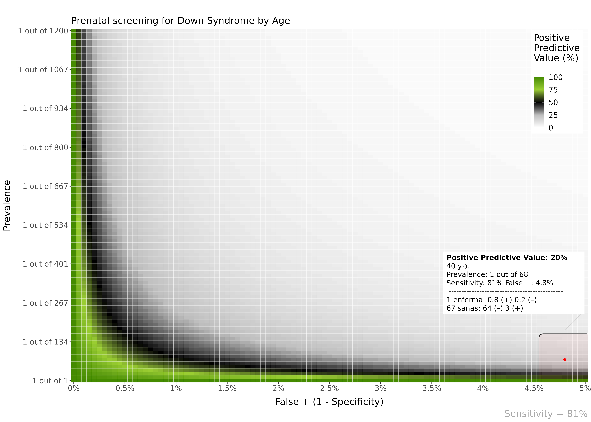
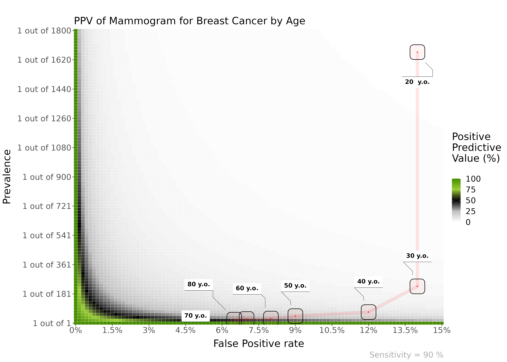
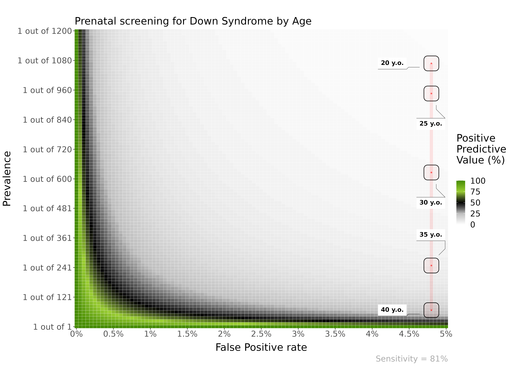
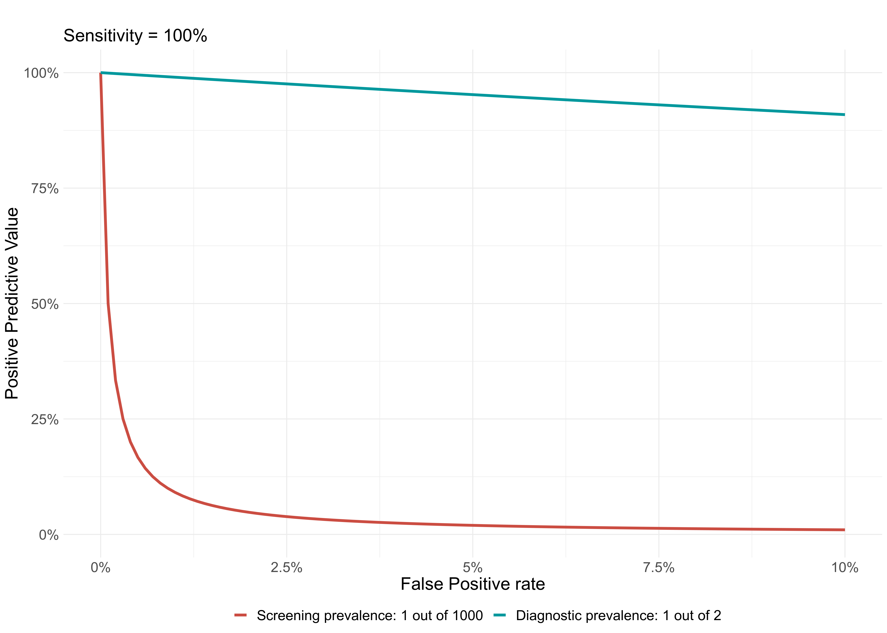

Bayesian reasoning in medical contexts
This package includes a few functions to plot and help understand Positive and Negative Predictive Values, and their relationship with Sensitivity, Specificity and Prevalence.
- The Positive Predictive Value of a medical test is the probability that a positive result will mean having the disease. Formally p(Disease|+)
- The Negative Predictive Value of a medical test is the probability that a negative result will mean not having the disease. Formally p(Healthy|-)
The BayesianReasoning package has three main functions:
- PPV_heatmap(): Plot heatmaps with PPV or NPV values for the given test and disease parameters.
- PPV_diagnostic_vs_screening(): Plots the difference between the PPV of a test in a diagnostic context (very high prevalence; or a common study sample, e.g. ~50% prevalence) versus a screening context (lower prevalence).
- min_possible_prevalence(): Calculates how high should the prevalence of a disease be to reach a desired PPV given certain test parameters.
You can install the stable (CRAN) version of the package with install.packages("BayesianReasoning") or development version with remotes::install_github("gorkang/BayesianReasoning@dev"). Please report any problems you find in the Issues Github page.
There is a shiny app implementation with most of the main features of the PPV_heatmap() function available.
PPV_heatmap()
Plot heatmaps with PPV or NPV values for a given specificity and a range of Prevalences and FP or FN (1 - Sensitivity). The basic parameters are:
- min_Prevalence: Min prevalence in y axis. “min_Prevalence out of y”
- max_Prevalence: Max prevalence in y axis. “1 out of max_Prevalence”
- Sensitivity: Sensitivity of the test
- max_FP: FP is 1 - specificity. The x axis will go from FP = 0% to max_FP
- Language: “es” for Spanish or “en” for English
PPV_heatmap(min_Prevalence = 1,
max_Prevalence = 1000,
Sensitivity = 100,
Specificity = 99,
Language = "en")

NPV
You can also plot an NPV heatmap with PPV_NPV = “NPV”.
PPV_heatmap(PPV_NPV = "NPV",
min_Prevalence = 800,
max_Prevalence = 1000,
Sensitivity = 90,
Specificity = 95,
Language = "en")
Area overlay
You can add different types of overlay to the plots.
For example, an area overlay showing the point PPV for a given prevalence and FP or FN:
PPV_heatmap(min_Prevalence = 1, max_Prevalence = 1200, Sensitivity = 81, Specificity = 100, width_Specificity = 5,
label_subtitle = "Prenatal screening for Down Syndrome by Age",
overlay = "area",
overlay_labels = "40 y.o.",
overlay_position_FP = 4.8,
overlay_prevalence_1 = 1,
overlay_prevalence_2 = 68)
Line overlay
Also, you can add a line overlay highlighting a range of prevalences and FP. This is useful, for example, to show how the PPV of a test changes with age:
PPV_heatmap(min_Prevalence = 1, max_Prevalence = 1800, Sensitivity = 90, Specificity = 100, width_Specificity = 15,
label_subtitle = "PPV of Mammogram for Breast Cancer by Age",
overlay = "line",
overlay_labels = c("80 y.o.", "70 y.o.", "60 y.o.", "50 y.o.", "40 y.o.", "30 y.o.", "20 y.o."),
overlay_position_FP = c(6.5, 7, 8, 9, 12, 14, 14),
overlay_prevalence_1 = c(1, 1, 1, 1, 1, 1, 1),
overlay_prevalence_2 = c(22, 26, 29, 44, 69, 227, 1667))

Another example. In this case, the FP is constant across age:
PPV_heatmap(min_Prevalence = 1, max_Prevalence = 1200, Sensitivity = 81, Specificity = 100, width_Specificity = 5,
label_subtitle = "Prenatal screening for Down Syndrome by Age",
overlay = "line",
overlay_labels = c("40 y.o.", "35 y.o.", "30 y.o.", "25 y.o.", "20 y.o."),
overlay_position_FP = c(4.8, 4.8, 4.8, 4.8, 4.8),
overlay_prevalence_1 = c(1, 1, 1, 1, 1),
overlay_prevalence_2 = c(68, 249, 626, 946, 1068))

PPV_diagnostic_vs_screening()
In scientific studies developing a new test for the early detection of a medical condition, it is quite common to use a sample where 50% of participants has a medical condition and the other 50% are normal controls. This has the unintended effect of maximizing the PPV of the test.
This function shows a plot with the difference between the PPV of a diagnostic context (very high prevalence; or a common study sample, e.g. ~50% prevalence) versus that of a screening context (lower prevalence).
PPV_diagnostic_vs_screening(max_FP = 10,
Sensitivity = 100,
prevalence_screening_group = 1000,
prevalence_diagnostic_group = 2)

min_possible_prevalence()
Imagine you would like to use a test in a population and want to have a 98% PPV. That is, IF a positive result comes out in the test, you would like a 98% certainty that it is a true positive.
How high should the prevalence of the disease be in that group?
min_possible_prevalence(Sensitivity = 100,
FP_test = 0.1,
min_PPV_desired = 98)To reach a PPV of 98 when using a test with 100 % Sensitivity and 0.1 % False Positive Rate, you need a prevalence of at least 1 out of 21
Another example, with a very good test, and lower expectations:
min_possible_prevalence(Sensitivity = 99.9,
FP_test = .1,
min_PPV_desired = 70)To reach a PPV of 70 when using a test with 99.9 % Sensitivity and 0.1 % False Positive Rate, you need a prevalence of at least 1 out of 429